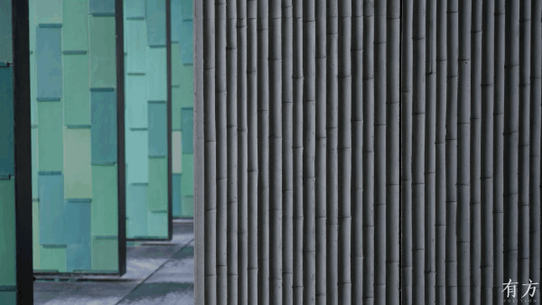

来源明确：有方专访提到北馆连续四栋密集建筑、限高下的“平远法”、以及由柱子支撑、漂浮在空中的曲折系统。Architectural Record 进一步指出，建筑群包括13个 pavilion，部分档案空间埋入相邻山体，山与水的粗粝地形构成项目山水结构。基于资料的归纳判断：项目的形式并不是“一个屋顶统领全场”，而是用低矮体量、曲折廊道、可开合屏扇和山体边界共同制造深度。
骨架：来源明确：Architectural Record 记录青瓷屏扇背后有近35英尺高的统一钢骨架，屏扇可借助电机旋转开启；有方专访也提到漂浮系统由柱子支撑。完整主体结构体系未检索到可靠资料。
围合：来源明确：青瓷屏扇、幕墙和廊道围合是主要可见建造语言；Architectural Record 说明青瓷片通过氧化铜表面扣件固定，可替换。
地台：来源明确：有方专访提到双廊主体是混凝土挡土墙，用来在保留山体原真性的同时保障游人安全。
15
材料与工艺
来源明确：有方专访中，陆文宇谈到团队在龙泉考察不同窑口，并为接纳手工“不统一”设计颜色选择和搭配控制系统；王澍提到为约7万片青瓷设计铜扣件，使每片都可装配、未来可完整取下。Architectural Record 则记录项目使用12种釉色类型，约100,000平方英尺陶瓷砖，尺寸约1英尺乘2.5英尺乘5/16英寸。
青瓷屏扇从手工材料变成建筑尺度的可开启界面。
16
构造逻辑
来源明确：Architectural Record 说明瓷板由氧化铜扣件连接到钢骨架，既加快施工安装，也便于损坏后替换；有方专访中建筑师强调每片青瓷未来都能完整取下、单独留给历史。基于资料的归纳判断：这里的构造逻辑把“材料可传世”转化为“构件可拆卸”，使地方工艺不只是装饰，而有保存和维护层面的制度感。

竹模混凝土与材料肌理，粗粝混凝土和青瓷共同构成当代宋韵的材料对照。
17
物理性能与施工控制
来源明确：Architectural Record 记录项目经历全尺寸 mock-up 后推进12种釉色，且设计团队对夯土做法进行了现场示范；有方专访说明双廊以混凝土挡土墙和顶盖回应山体安全。未检索到可靠资料：完整防火、防水、机电、保温、排烟、安防与文物库房环境控制系统。